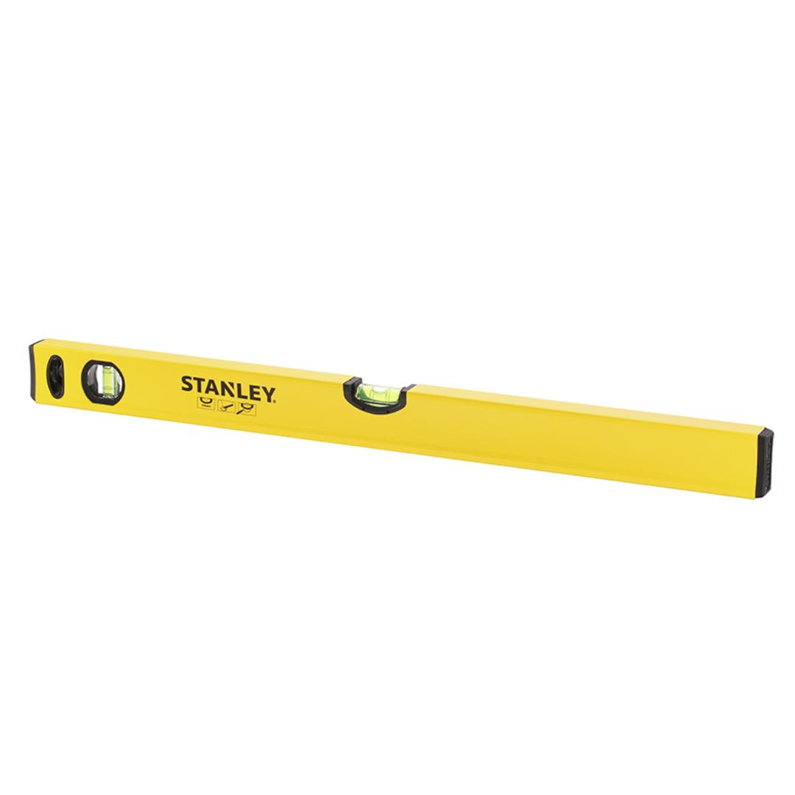
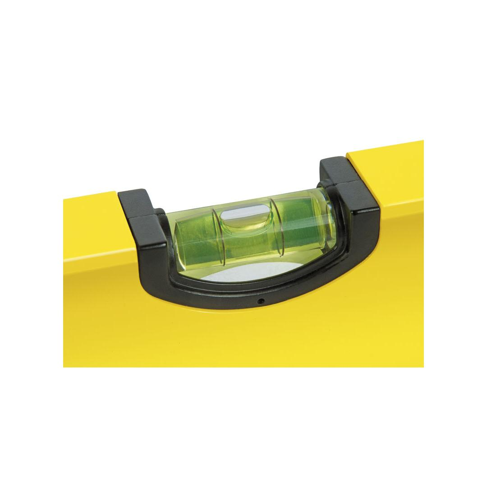
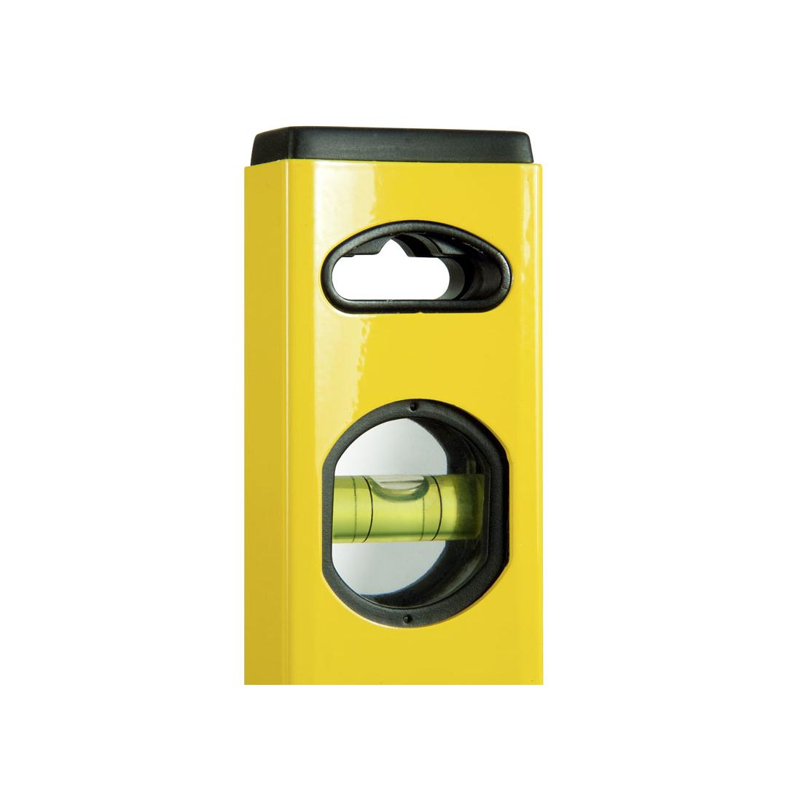
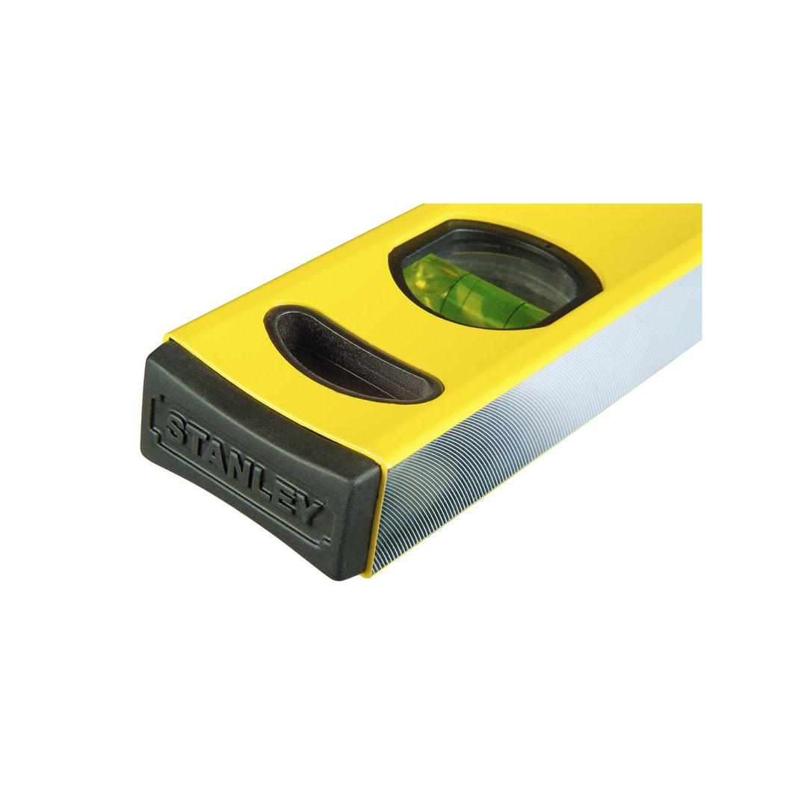
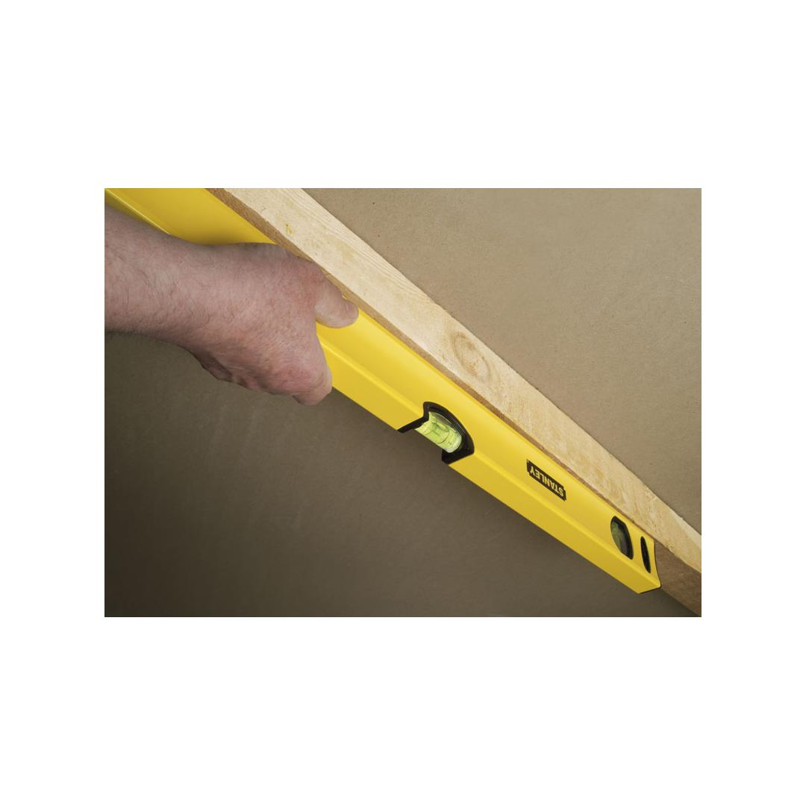

STANLEY | LEVEL CLASSIC - 1200MM
STHT43106-8





- Strong yet lightweight aluminum frame suitable for all-purpose durability
- 2 plumb vials for easy readability
- Center vial with 0.5mm/1m provides excellent accuracy
- Soft material used to make shock absorbing end caps
- Milling surface to provide better accurate measurement
Important Notice:
- STHT43106-8 is being replaced by the upgraded STHT1-43106, which is already available and in stock.
- We have limited stock of STHT43106-8 remaining. Once it's sold out, it will no longer be available.
- Don’t miss this chance to own STHT43106-8 before it’s gone for good!
Click here to check out STHT1-43106 now!
Specifications
| Rating | Industrial |
| Length [mm] | 1200 |
| Number of Vials | 2 |
| Accuracy | 0.5mm/1m |
| Material | Aluminium |
Includes